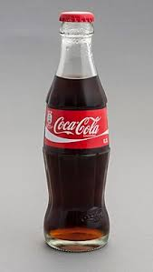
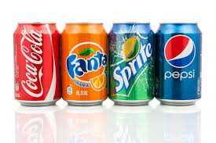

La vida en general
La vida en general
 Coca-Cola, conocida comúnmente como Coca en muchos países hispanohablantes (en inglés Coke) es una bebida gaseosa y refrescante, vendida a nivel mundial, en tiendas, restaurantes y máquinas expendedoras en más de doscientos países o territorios. Es un producto de The Coca-Cola Company. En un principio, cuando la inventó el farmacéutico John Pemberton, fue concebida como una bebida medicinal patentada, aunque fue adquirida posteriormente por el empresario Asa Griggs Candler, que hizo de la bebida una de las más consumidas del siglo xx, y del siglo xxi.
Coca-Cola, conocida comúnmente como Coca en muchos países hispanohablantes (en inglés Coke) es una bebida gaseosa y refrescante, vendida a nivel mundial, en tiendas, restaurantes y máquinas expendedoras en más de doscientos países o territorios. Es un producto de The Coca-Cola Company. En un principio, cuando la inventó el farmacéutico John Pemberton, fue concebida como una bebida medicinal patentada, aunque fue adquirida posteriormente por el empresario Asa Griggs Candler, que hizo de la bebida una de las más consumidas del siglo xx, y del siglo xxi.

La compañía produce un concentrado que luego vende a varias empresas embotelladoras licenciadas, las cuales mezclan el concentrado con agua filtrada y edulcorantes para, posteriormente, vender y distribuir la bebida en latas y botellas de plástico o de vidrio en los comercios

También existen variantes, fabricadas por la misma empresa, como la Coca-Cola Light y la Coca-Cola Diet; otras son la Coca-Cola sin cafeína, Coca-Cola Cereza, Coca-Cola Vainilla, Coca-Cola Zero, entre otras lanzadas especialmente, como la de sabor a limón.